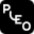

A study of how breakthrough-era and growth-stage fintechs built awareness on social, with a framework for identifying which competitor's playbook could map to a brand in WorldFirst's position.
BySteven ChenApril 2026~25 min read
Eight brands studied

PleoNubankMonzoWiseChimeRevolutRampBrex
00
Scope & method.
This article studies what eight fintechs did to build upper-funnel awareness on social. It analyses the tactics, the preconditions that made them work, and which ones could transfer to a brand in WorldFirst's position.
What this is
A structured analysis of competitor playbooks. Eight case studies, a five-dimension fit framework, seven content pillars, four composition profiles, and a lifecycle view.
What this isn't
A WorldFirst marketing plan. A prescription. A set of tactical commitments. The prescribing happens downstream of this evidence, not inside it.
Brands covered: Pleo, Nubank, Monzo, Wise (2014-2018 era & current), Chime, Revolut Business, Ramp, Brex. Selected for breakthrough-stage relevance, public documentation of their approach, and variety of playbooks.
§ 1
The brand case studies.
First: what is upper-funnel for?
Before reading case studies, it helps to name what upper-funnel work can actually do. We're currently experimenting with direct acquisition (§ 4b) — but across the eight brands studied, upper-funnel serves several other strategic purposes that look similar on the surface and are wildly different in the data. Knowing which purpose a brand is optimising for explains why their playbook looks the way it does.
Content earns affinity and credibility upstream of another mechanic that actually converts (referral, paid, sales). Paid converts better when trust is already there.
Content that gets cited in sales decks, investor briefings, partnership conversations. Doesn't convert on its own — it makes high-touch deals close.
Pleo CFO Playbook (sales teams cite the research directly). WF flagship data would do the same.
04 · Historical
Category creation
Content defines what the category is for buyers who don't yet have a mental model. Villain framing, movement-building, PR-as-journalism.
Wise 2014-18 ("banks' hidden FX margins"). Pleo for "spend management" as a category. Cross-border payments is already a known category — this matters less for us now.
05 · Not our play
Defensive moat / market defence
Content defends existing market share and keeps competitors out. Heavy on SEO evergreen and cultural relevance. Works at mature stage.
Wise today (SEO moat for cross-border terms). Mature Monzo (UK cultural presence).
06 · Not our play
Cultural retention
Content keeps existing users emotionally close to the brand. Job is retention not acquisition — works only after the brand has reached cultural presence.
Monzo UK (lifestyle memes, payday humour). Chime (1.1M+ IG community).
07 · Not our play
Investor narrative / capital signalling
Content demonstrates momentum for capital markets. Milestone posts, user counts, regulatory wins. Mostly a public-company concern.
Nubank F-1 era (every milestone was PR-coded). Public fintech quarterly narratives.
08 · Not our play
Talent / recruitment brand
Content attracts engineering and operator talent. Reads as brand, functions as recruiting funnel.
Early Stripe and Brex (engineering culture posts), early Monzo (transparency posts). Not a material channel for our stage.
What this means for WF
Our upper-funnel needs to do three things simultaneously: direct acquisition (primary, experimental), trust layer (so paid and sales convert), and authority (so enterprise and partnerships close). The other five purposes are either irrelevant (investor narrative, talent brand) or don't fit our stage (category creation, cultural retention, defensive moat). Case studies below should be read with this lens — a brand doing cultural retention at mature stage isn't doing the same job as we are.
Where each brand sits — and where we do
The eight brands vary along two dimensions that determine which playbook they can run: whether their buyers are concentrated or dispersed across geographies, and whether their growth is content-led (education drives adoption) or product-led (the product's own value drives virality). Plotted together, one brand ends up closest to our profile.
Closest match to WF
Nubank — both dispersed multi-region, sitting at a similar mixed content/product register, at a breakthrough-to-growth inflection.
Pleo
Nubank
Monzo
Wise
Chime
Revolut
Ramp
Brex
WorldFirst
The top-right quadrant is where brands must win through content depth + regional variation. Nubank's playbook is instructive because their constraint profile most closely matches ours. Pleo's content architecture transfers as a principle but not as an operational model — they're concentrated Europe, we're dispersed globally. The bottom-left cluster (Chime, Monzo, Ramp, Brex) is where product-led virality or geographic concentration let brands sidestep heavy content investment — a playbook we can't run.
The eight cases
For each brand, the breakdown covers what they did, why it worked, and the strategic implication for a fintech thinking about adopting their approach. Each case closes with what's not borrowable — the invisible preconditions that make the tactic work.
Case 01
Pleo
Narrative-driven content architecture. Small team, proprietary data, flagship asset.
The CFO's Playbook for 2025. The flagship asset. A survey of 3,250 European finance leaders becomes the substrate for a year of downstream content — one definitional piece, a hundred surface treatments.
What they did
Three moves. Annual narratives instead of content calendars — 3-4 broad themes ("AI and Finance", "The role of the CFO") chosen each January; every piece of content for twelve months ladders into them.
The flagship asset is the CFO Playbook — an annual research report built on a survey of 3,000+ European business leaders. One definitional piece becomes the substrate for a year of downstream content.
Channel discipline that bypassed the B2B default: early Pleo reached CFOs through Facebook, not LinkedIn. Dramatically lower CPMs; audience reachable off-duty. Supporting mechanics: an internal Brand Studio, local marketing managers per major market, OOH with defined awareness-lift targets.
3,000+
European business leaders surveyed for the annual CFO Playbook
12 mo
Annual narrative cycle — one theme, 100 surface treatments
Why it worked
Narrative discipline let a small team compound recognition across twelve months. The flagship asset solved the content-volume problem — one definitional piece with 100 surface treatments, rather than 100 original pieces. The channel discipline reflected honest reading of where the buyer was reachable cheaply, not where B2B convention said to be.
Implication
The narrative-first planning model is the highest-leverage borrow for any fintech with a small content team and a multi-channel footprint. The flagship asset model is almost universally applicable to B2B fintechs with proprietary data. The channel lesson is a meta-principle — find platforms where the buyer is reachable cheaply, not where competitors are fighting.
What's not borrowable
Brand Studio + local marketing manager structure requires headcount most brands don't have. OOH works for geographically concentrated European urban audiences and doesn't transfer to dispersed multi-region B2B. Pleo's single-persona clarity (CFO of mid-market European company) gave them targeting coherence multi-region brands with wide buyer variance can't easily replicate.
Transfer verdict
Narrative planningFlagship assetChannel counter-defaultBrand Studio structureOOH
Case 02
Nubank
Regional creator plurality. No single global brand face. Multi-creator per market.
Nu's signature purple brand presence. The brand identity that carries across creator partnerships and market-entry campaigns — the visual anchor for regional creators translating the Nubank message into each local register.
What they did
LatAm expansion executed through localised creator partnerships as the primary awareness channel. Each new market entered with its own creators — Gusta, Pedro Otoni, Jacira, Aline Diniz, Manu Gavassi — different people per market, different cultural registers carrying the Nubank message.
Educational register dominated newer markets; entertainment and lifestyle adjacency came in more mature markets. Manu Gavassi × Black Friday scam awareness typifies the educational register in mature markets.
Every milestone — user-count crossings, product launches, market expansions — became a social moment, turning growth itself into content. The SEC F-1 filing documented 80-90% organic acquisition, CAC of ~$5, and 110% CAGR.
80-90%
Organic / word-of-mouth customer acquisition at peak (per F-1)
Regional credibility outperformed global recognition at the moment of market entry. A buyer in Mexico who didn't know Nubank trusted Pedro Otoni. The plural model gave resilience — no single creator was a single point of failure. The milestone narrative created the sensation of watching a brand grow in public — meaningfully different from a mature brand's "we're big" messaging.
"One lead creator per priority region, operating as cultural translator for that market, measurably outperforms single global spokesperson approaches."
Implication from the study
Implication
Regional creator plurality is the structurally sound approach for any multi-market fintech. One lead creator per priority region as cultural translator. Educational register is a consistent signal — content that makes buyers feel smarter about the money problem outperforms lifestyle or promotional content for technical subject matter like cross-border payments.
What's not borrowable
Nubank's referral-driven growth (80-90% at peak) depended on consumer banking economics where owning a Nubank card was a status signal. B2B account openings don't carry the same cultural charge. The waitlist / invite mechanic that drove viral early growth also doesn't translate.
"Big mood x." Monzo's Instagram register. The hot-coral cards used as visual prop, the caption as emotional shorthand, the comment thread from followers (including a reply from @wiseaccount). Lifestyle content about money — not product content — is what a three-person team posts 20 times a week.
The critical operational decision: social is not the place to talk about product. The threshold for product content on social is whether it's culturally interesting enough to matter to a stranger — most aren't, so most product content lives on the website, blog, or email. Social instead covers lifestyle content about money: spending memes, payday humour, cultural commentary.
They use compliance as a creative parameter, steering toward lighter-regulated content categories (lifestyle, entertainment) and away from heavier ones (financial advice, specific claims). Brand-adjacent creators (comedy, lifestyle) outperform category-native finance creators for reach.
20/wk
Posts across platforms from a 3-person team + video creator
4
People total: 3 social + 1 video
Why it worked
The "social isn't for product" discipline let a small team sustain 20 posts per week without running out of content — the emotional terrain of money is infinite; product features are finite. The compliance frame turned a constraint into a competitive advantage: most fintech social teams treat compliance as a reason not to be creative; Monzo treated it as a creative brief. Brand-adjacent creators reach audiences in wider cultural contexts where they're not in "finance mode", producing higher net reach than category-native finance reviewers.
Implication
Three best practices with wide applicability. The "social isn't for product" threshold is a content discipline any fintech team can adopt regardless of size. The compliance-as-parameter frame is especially useful for multi-region fintechs operating across different regulatory environments. The brand-adjacent creator principle suggests that small business lifestyle creators, sourcing-focused podcasts, and cultural commentators often reach B2B buyers more effectively than category-native finance reviewers.
What's not borrowable
The register — Gen Z lifestyle humour, consumer banking memes, 26-year-old London cultural context — is wrong for a B2B SME buyer. Borrow the discipline, not the voice.
Transfer verdict
"Social isn't for product"Compliance as creativeBrand-adjacent creatorsConsumer register20/week cadence
Case 04
Wise (2014-2018 breakthrough era)
Villain framing and cultural penetration. One repeatable message, every channel.
"WE'RE OWED £5.6 BILLION." The Westminster stunt — branded truck, matching t-shirts, a Change.org petition running in parallel, cameras invited. Guerrilla content engineered to be photographed and reshared. A PR-coded distribution hack before social algorithms favoured brands.
What they did
Wise's breakthrough was defined by three mechanics. A villain frame positioning banks as hidden-fee antagonists, deployed consistently across every channel. PR-coded content produced as if journalism — six Guardian pieces in 2014-2015, and a podcast that read as journalism but functioned as brand narrative.
A single repeatable message across every format, so every exposure reinforced every other exposure. The four months around the Stop Hidden Fees campaign doubled transfer volume from £125M to £250M.
£125→250M
Transfer volume doubled in four months around the campaign
The villain frame solved the category-creation problem. "International money transfer startup" meant nothing to most people in 2014; "the thing that's not your bank ripping you off" meant something immediately. PR-coded content was a distribution hack — before social algorithms favoured brands, earned media reached orders of magnitude more people than owned channels could. Message discipline tied it together so compound exposure drove recognition.
"What's the one message every channel is restating?"
The implied strategic question
Implication
The message-discipline principle is the single most important transferable lesson from this study. The fintechs that broke through did it with one repeatable message deployed across every channel, every region, for years. Every strategic content decision should be downstream of answering "what's the one message every channel is restating?" The category-creation lesson is adjacent — whatever emotional frame a fintech commits to becomes the category definition for its audience over time.
What's not borrowable
Wise owns the villain framing in the cross-border category. Running the same play puts any competitor in direct comparison with Wise on their strongest ground. The 2014-2015 guerrilla stunt and PR-flavoured content era is also largely over — modern buyers read through that playbook faster than they did a decade ago.
Transfer verdict
Message disciplineCategory-creation frameVillain framingGuerrilla stuntsPR-as-content era
Case 05
Chime
Social as trust infrastructure for a referral engine. Decoupled from direct conversion.
Chime's 2024 social footprint. Mosaic of the Shorty Awards submission — Sidewalk Talks, member-led content, the green wordmark as anchor. Social earns the affinity; the referral mechanic captures the conversion. Two jobs, separately measured.
What they did
Chime's growth engine was referrals — bonuses paid to referrer and new user on direct-deposit setup. But what made referrals work was the brand voice on social.
Peer-register voice on Twitter, Instagram, TikTok, Facebook — jokes about payday, fee memes, public warmth in customer responses. The Shorty Awards case documents the editorial model (including 1.1M+ IG followers) and campaigns like Ball on a Budget.
Social output aligned with real actions — donations, community programs, 10th-anniversary member celebrations — so the voice didn't feel performative. Social channels didn't drive sign-ups directly; they earned the brand affinity that made customers willing to refer.
Why it worked
Social was decoupled from direct conversion. Its job was trust and affinity — upstream of the referral mechanic. The referral bonus economics only worked if customers had enough emotional alignment with the brand to recommend it. Social produced that alignment; the referral mechanic captured the conversion separately.
"Social's job in the funnel is trust-earning, affinity-building, and awareness-driving — not direct conversion."
The decoupling principle
Implication
The decoupling principle is the best practice to extract. Social's job is trust-earning and affinity-building. Conversion happens through adjacent mechanics that only work if trust is already there. Measurement architecture should separately track awareness contribution and conversion contribution, treating them as different jobs with different signals.
What's not borrowable
Chime's B2C social voice — payday memes, consumer banking jokes, young-professional register — doesn't translate to B2B SME buyers. Principle is borrowable; register is not.
Revolut × Sidemen. Brand-adjacent creators on their native platform — the seven Sidemen with co-branded SDMN debit cards. A cultural collab, not a finance-reviewer one — reaching an audience when they're not in finance mode.
What they did
Revolut's Head of Growth for UK/Ireland/Nordics, Fiona Davies, has been publicly explicit about the channel mix. YouTube is the primary creator focus because personal-finance content runs long and YouTube users will watch long content. TikTok is openly "one we have not cracked" — Revolut deprioritises it because attention span on TikTok makes personal finance content underperform.
Creator selection prioritises YouTube-native finance creators covering bank features, investment products, and international fee comparisons. The program reaches scale — Modash documents 36+ Revolut-sponsored creators. Collabs like Revolut × Sidemen extend reach into brand-adjacent cultural territory. Platform-specific decisions are driven by content-to-platform fit, not by audience presence.
"TikTok is one we have not cracked."
Fiona Davies, Head of Growth, Revolut UK/IE/Nordics — Digiday, 2024
Why it worked
Honest assessment of platform fit prevented wasted investment. Many fintechs push content to every platform because "that's where our audience is." Revolut's discipline recognised that audience presence doesn't equal attention fit — a demographic can be on TikTok but not in a cognitive state to process finance content. The long-form YouTube choice matched the inherent nature of finance content: explaining FX fees takes more than fifteen seconds.
Implication
Platform fit over platform presence is a disciplined best practice. The relevant strategic question isn't which platforms the buyer is on — it's which platforms the specific content type performs on. Cross-border payments content is inherently explanatory, numerical, and sometimes technical. Platforms that reward short emotional hits may not be the right platforms even when the audience is present. The corollary: it's strategically mature to admit a channel isn't working and redeploy.
What's not borrowable
The specific YouTube creator ecosystem Revolut taps into is more mature for consumer finance than for B2B cross-border payments. The mechanism transfers; the density of available creators varies by vertical.
Transfer verdict
Platform fit over presenceAdmit what's not workingYouTube-first for long-formCreator scale program
Case 07
Ramp
Social as a deliberately de-prioritised channel. Counter-thesis playbook.
Social plays a supporting role: thought leadership from operators, executive posts, occasional founder content. The proof point: Ramp has publicly scaled past $600M in customer savings, a milestone announced via a Shopify-as-customer press release, not a social campaign.
Their framing is "channel alpha" — find channels others aren't exploiting, or do familiar channels in ways others won't because they're operationally hard. Cold calling is Ramp's public example.
~$413K/mo
Paid PPC spend at scale (Foundation Inc teardown)
$600M+
Customer savings milestone — product-led proof
Why it worked
For a B2B fintech with a clear ROI claim ("we save customers $600M"), social organic wasn't the most efficient reach mechanism. Paid PPC captured high-intent search traffic. Accountant channels distributed recommendations through trusted advisors. Product-led virality created word of mouth more cheaply than content could. Ramp's honest assessment was that social produces trust and authority but not efficient acquisition at their stage.
"Not every fintech should be social-led."
The counter-thesis principle
Implication
Counter-thesis discipline is itself a best practice. If the math shows paid + partnerships + product-led virality outperforms organic social by enough margin, social should play a supporting role, not a primary one. The related principle: be willing to invest in unfashionable channels where competitors aren't fighting. The equivalent for any brand is channels that carry buyer trust but aren't considered media.
What's not borrowable
Ramp's paid PPC economics depend on high-intent US B2B search volume with clear commercial terms. Regional mixes outside the US don't replicate those economics. The accountant / partner channel depends on an existing professional community distributing recommendations; no equivalent community exists at the same scale for most cross-border payment categories.
Social and paid played a secondary role, handling mid-funnel conversion after OOH had built initial awareness. Their explicit strategic insight: paid advertising is hard in small, niche markets because the audience is too narrow to target efficiently, but cheap enough to reach broadly through OOH in geographies where the audience concentrates.
They even productised the channel: Brex Billboard Rewards turned OOH into a repeatable motion rather than a one-off stunt.
10×
ROI frame per OneScreen.ai case
2
Stages: OOH awareness → digital conversion
Why it worked
For geographically concentrated B2B audiences (startups in SF), OOH was mathematically more efficient than targeted digital. The audience self-identified when they saw "corporate cards for startups" on a billboard. Targeted digital struggled because the audience was too small to be an efficient ad market. The two-stage architecture (broad awareness → site visit → conversion via social / retargeting) gave social a clearer job.
Implication
The two-stage awareness-to-conversion architecture is a universally applicable best practice. Upper-funnel awareness and bottom-funnel conversion aren't the same job, and trying to make one mechanism do both usually underperforms. Broad awareness through whatever mechanism fits the audience; conversion through social and paid retargeting against audiences that awareness work qualified.
What's not borrowable
Geographic concentration economics don't transfer to dispersed multi-country B2B audiences. The principle (two-stage architecture) transfers; the specific OOH tactic doesn't.
Transfer verdict
Two-stage architectureGive social a clearer jobChannel fit to audience shapeOOH geographic tactic
Eight playbooks, compared.
#
Brand
Core move
Stage
Key stat
Transferable principle
01
Pleo
Annual narratives + flagship research
Breakthrough
3,000+ CFOs surveyed
One asset → 100 treatments
02
Nubank
Plural regional creators
Expansion
80-90% organic acquisition
Regional plurality, educational register
03
Monzo
Lifestyle social, product off-social
Growth
20 posts/week, 3-person team
"Social isn't for product"; compliance as creative
04
Wise (2014-18)
Villain frame + guerrilla stunts + PR
Pre-breakthrough
£125M → £250M in 4 months
Message discipline
05
Chime
Trust voice → referral conversion
Growth
1.1M+ IG followers
Decouple social from conversion
06
Revolut
YouTube-first, admit TikTok miss
Growth
36+ sponsored creators
Platform fit > platform presence
07
Ramp
Paid + partners + product virality
Breakthrough
~$413K/mo PPC; $600M savings
Counter-thesis: not every fintech is social-led
08
Brex
OOH awareness → digital conversion
Breakthrough
10× ROI (OneScreen)
Two-stage awareness / conversion architecture
The eight playbooks diverge on tactics but converge on a short list of transferable principles — explored in § 2 (fit framework), § 3 (building blocks), and § 4 (composition).
§ 2
Which competitor's playbook fits?
A brand can't simply pick the most interesting competitor and copy their approach. Most failed strategic imitation comes from copying the visible tactic without matching the invisible preconditions — which is why the "just do what Wise did" or "just do what Ramp did" conversations usually go nowhere.
Five dimensions determine whether a competitor's playbook is a real fit, a partial fit, or a bad fit.
D1 · Buyer concentration vs. dispersion
Concentrated buyers
Brex's early target was startups in SF. Pleo started with CFOs in specific European cities. Monzo focused on UK consumers. Concentration makes OOH, city events, and regional takeovers efficient.
Tactics: SF billboards (Brex), Westminster protest (Wise), OOH with awareness-lift targets (Pleo).
Dispersed buyers
Nubank across LatAm. Payoneer across 190+ countries. WorldFirst across UK, SEA, EEA, Vietnam, Longtail. Concentration-dependent tactics become uneconomic.
Playbooks built on concentration don't transfer to dispersed footprints. Playbooks built on dispersed expansion transfer well to other multi-market brands.
D2 · Buyer homogeneity vs. variance
One clean persona
Ramp serves finance teams at growth-stage US companies. Pleo serves CFOs of mid-market European SMBs. Chime serves underbanked Americans. Single-persona clarity allows commitment to one register.
A fintech serving Amazon sellers, freelancers, sourcing importers, and overseas Chinese business owners across multiple regions is serving several distinct personas with different content needs.
Playbooks: Nubank's regional creator diversity, Monzo's broad lifestyle register (structurally, not the voice).
Rule of thumb
Single-persona playbooks transfer poorly to brands with variance. Plural-persona playbooks transfer better.
D3 · Brand lifecycle stage
Four stages matter: pre-breakthrough (unknown in most target markets), breakthrough (growing fast, reaching new markets), growth-stage (known in core, defending and expanding), mature (established, operating in defence).
The playbook Wise used in 2014-2018 wouldn't work for Wise today and doesn't fit a mature brand. The playbook Ramp runs today wouldn't have worked for Wise in 2014. Studying mature-brand playbooks and applying them to breakthrough-stage brands — or vice versa — is one of the most common strategic mistakes.
Brand awareness / adoption →
● = current position
WorldFirst Global
WorldFirst China
Ramp
Nubank
Brex
Pleo
Revolut
Monzo
Chime
Wise
Pre-breakthrough
Breakthrough
Growth
Mature
Reading the curve: brands on the steep rising section are growing fast — the playbook still works. Brands on the flattening top-right are defending, with composition heavily shifted to evergreen SEO and lifestyle retention. WorldFirst Global sits at the breakthrough zone — near Nubank, where category-creation, creator partnerships, and milestone narrative earn their weight. WorldFirst China is further along, between breakthrough and growth — the brand is better known in the Chinese-operator segment via the Ant/Alipay relationship. Ramp sits close to WorldFirst China on the curve — its PLG engine + paid PPC are working. Mature-brand playbooks don't apply to any of these positions.
D4 · Product-driven virality vs. education-driven adoption
Product-driven virality
Ramp saves companies money with a visible dollar number. Chime eliminates fees with a clear dollar value. Wise shows real FX rates side-by-side with bank rates. The product does content's job.
Education-driven adoption
Pleo had to explain expense management as a category. Cross-border payment alternatives have to explain their advantage over banks. The product can't explain itself — content must.
Rule of thumb
A playbook built on product-led virality (Ramp, Chime) won't transfer to a brand where the buyer doesn't understand the category yet.
Trying to run Monzo's cadence with Pleo's team size fails. Trying to run Pleo's flagship-asset model with Monzo's post volume wastes the asset. Picking a playbook requires matching its resource requirements to what the team can actually sustain.
Applied: scoring the fit
Score each competitor across the five dimensions against the adopting brand's profile. 4/5 match → strong fit; 2-3 → principles transfer but tactics probably don't; 0-1 → instructive but not directly borrowable.
For a fintech with dispersed multi-region buyers, wide buyer variance, breakthrough-stage in target markets, education-driven adoption, and a small central team, the closest matches are:
Pleo — principle-source for narrative architecture rather than operational model (2-3/5)
Brex, Ramp — worst fits: geographic concentration required; paid-led economics don't replicate across regions (1-2/5)
The point of this framework isn't to pick one winner. It's to stop the common mistake of copying the most visible playbook rather than the most applicable one.
§ 3
Content pillars as upper-funnel building blocks.
Across the brands studied, upper-funnel content sorts into a small number of repeating pillars. Each pillar drives a different type of awareness, operates on a different time horizon, costs a different amount, and contributes to demand-gen through different mechanisms.
Each pillar is evaluated on six criteria: what awareness it drives, time horizon, cost, manpower, contribution to real growth, and fit for a fintech at WorldFirst's current stage.
Pillar A · Annual flagship research
Typified by Pleo's CFO Playbook; similar models at various B2B brands.
Awareness
Category-authority awareness. The brand becomes known as the source of definitional data about the buyer's industry. Not surface recognition — deeper trust from buyers, media, analysts, partners.
Time horizon
Long-term. 3-6 months to produce, compounds value over 12-24 months. Each annual edition benefits from the last.
Cost
High absolute, efficient relative. Typically $80K-300K. One asset fuels a year of derivative content — blended CPM lower than continuous production.
Manpower
Concentrated, not continuous. Research lead + content lead + design + PR for 2-3 months of heavy production, then lighter through the derivative year.
Growth
Strong across multiple vectors. Lead magnet, PR multiplier, sales enablement, authority builder. Pleo's Playbook has become a reference customers print and display.
Fit for usStrongFintechs with proprietary transaction data have material advantage. Few playbooks transfer more cleanly to our profile.
Where this pillar livesTypical channel distribution
LinkedIn
30%
Press / PR
25%
Blog / Web
20%
Email
15%
Webinars · Events
10%
Gated lead magnet on the website, syndicated to LinkedIn influencers, press-covered for credibility, drip-sequenced over email.
Pillar B · Regional creator partnerships
Typified by Nubank across LatAm, Revolut's YouTube program, fintech influencer programs generally.
Awareness
Localised trust-based. The creator's audience trusts them; trust transfers to the brand. Region-specific, buyer-specific — not broad cultural recognition.
Time horizon
Medium. Individual partnerships deliver over weeks to months. Regional networks take 6-12 months to operate at full effectiveness.
Cost
Variable. $2K (micro) to $200K+ (macro with exclusivity). Multi-region networks scale quickly in total cost.
Manpower
High coordination. 10+ creators across 5+ regions typically requires a dedicated creator manager.
Growth
Strong in new markets, weaker in mature. When the brand is unknown, creators deliver conversion lift brand campaigns can't match.
Fit for usStrongA multi-region brand with low awareness is exactly where creator partnerships perform best. Main constraint is coordination bandwidth.
Where this pillar livesTypical channel distribution
YouTube
35%
TikTok
25%
Instagram
25%
Local (XHS · Kuaishou)
10%
X · Threads
5%
Platform density varies by region — creators deploy natively on their audience's platform. China markets skew to Xiaohongshu + Kuaishou; LatAm to IG + TikTok.
Pillar C · Educational evergreen content
Typified by Wise's SEO moat, Nubank's financial literacy, Monzo's explainers.
Awareness
Search-intent + category-education. Buyers find the content when researching their problem; the brand becomes associated with solving the category.
Time horizon
Very long-term. Well-structured evergreen drives organic traffic for 3-7 years. SEO compounds.
Cost
Moderate, efficient over time. Similar cost to topical content, but lifetime value 10-50× higher.
Manpower
Sustainable for small teams. 1-3 people with freelance support. No specialised resourcing required.
Growth
Strong and compounding. Captures buyers at the moment they're searching — highest intent in the funnel. Wise's SEO moat is widely cited as one of the main drivers of their sustained category dominance.
Fit for usStrongEducation-driven categories benefit disproportionately. One of the highest-ROI pillars at any stage.
Where this pillar livesTypical channel distribution
Blog / SEO
45%
YouTube long-form
20%
LinkedIn articles
15%
Email drip
10%
Repurposed social
10%
Long-tail organic search is the compounding asset — social is distribution, not the asset itself.
Pillar D · Lifestyle / cultural content
Typified by Monzo's banking humour, Chime's peer voice, Nubank entertainment adjacency.
Awareness
Cultural affinity. Buyers encounter the brand in non-purchase contexts; emotional association with the brand is what compounds.
Time horizon
Short per piece, medium cumulative. Individual pieces last days to weeks. Register builds over 12-36 months.
Cost
Low per piece, high in aggregate. Sustaining the pillar requires continuous output.
Manpower
High continuous load. Dedicated team that understands register, moves quickly on trends, produces at volume.
Growth
Indirect. Job is cultural presence. Strong at brand maintenance, weaker at acquisition in the short term. Compounds pre-existing recognition rather than building from zero.
Fit for usWeak (B2C register)Moderate (B2B-adapted)
A B2B-adapted register (small business lifestyle, sourcing, entrepreneurial culture) could work, but requires discovering a register that doesn't yet exist in a structured way in our category.
Where this pillar livesTypical channel distribution
Instagram
35%
TikTok
30%
X / Twitter
20%
Facebook
10%
Other
5%
Register-specific — works where audiences are in non-purchase cognitive state. Weak fit for LinkedIn.
Pillar E · Milestone and momentum narrative
Typified by Nubank's user-count milestones, funding-round moments, brand scale signals.
Awareness
Credibility-by-scale. Visible growth correlates with trust. Signals stability to risk-conscious B2B buyers.
Time horizon
Short burst, medium cumulative. Each milestone delivers days to weeks of awareness.
Cost
Very low. Uses existing data (customers, volumes, expansions). Cost is creative + design + PR for bigger moments.
Manpower
Light. Content lead + design support per milestone. Project basis.
Growth
Moderate. Reinforces trust with audiences already considering the brand. Supports the lower funnel by reducing perceived risk in the final decision.
Fit for usStrong · underusedAny brand with 1M+ customers and multi-year history has material milestone content available. Most fintechs under-leverage this.
Where this pillar livesTypical channel distribution
LinkedIn posts
35%
Press releases
25%
X / Twitter
20%
Blog / Owned
15%
Other
5%
Scale signals perform best on professional and news-register platforms — where buyers make vendor-trust decisions.
Pillar F · PR-coded / earned media
Typified by Wise's Guardian-era PR and various fintech press campaigns.
Awareness
Third-party-validated. Earned media carries implicit credibility owned channels don't.
Time horizon
Short burst, medium if clustered. A single hit drives a day to a week; sustained coverage over 6-12 months can shift brand perception.
Cost
Moderate to high. PR agency retainers ($10K-50K/month) + internal coordination. Good PR is expensive even when placements are "free."
Manpower
Specialist-dependent. Requires PR professionals with existing media relationships.
Growth
Moderate. Drives brand search short-term; long-term effect is credibility compounding. Declining effectiveness over time.
Fit for usModerate · supportingThe 2014-era Wise playbook is largely over. Works best when tied to flagship research rather than standalone.
Where this pillar livesTypical channel distribution
Tier-1 Press
50%
Podcast
20%
Op-eds / Analyst
15%
Wire / Syndication
10%
Other
5%
Credibility compounds through the outlet's authority, not the brand's — Bloomberg, FT, WSJ, industry verticals.
Pillar G · Platform-native short-form
TikTok, Reels, YouTube Shorts, Xiaohongshu — a cross-pillar format carrying educational, lifestyle, or milestone content.
Awareness
Platform-specific viral. Can reach vastly beyond existing audiences when algorithms favour a piece.
Time horizon
Very short. Individual pieces last hours to days.
Cost
Low per piece, moderate aggregate. Cheap individually; continuous production drives up aggregate cost.
Manpower
High, specialised. Creators who understand platform-specific cultural codes. Not interchangeable across platforms.
Growth
Highly variable by platform and content type. Revolut's explicit "we haven't cracked TikTok" signals that finance content doesn't convert well in short-form on some platforms.
Fit for usVariable by platform
Xiaohongshu for overseas Chinese shows strong fit. TikTok shows weaker fit for the reasons Revolut cites. YouTube Shorts is underexplored for B2B and may represent channel alpha.
Where this pillar livesTypical channel distribution
TikTok
30%
YouTube Shorts
25%
Instagram Reels
25%
Xiaohongshu · Local
15%
Other
5%
Cross-pillar format — the container, not the content. Can carry educational, lifestyle, or milestone material.
Education-driven category; SEO compounds 3-7 years
T1
E · Milestone / momentum
Strong
Real scale + low cost + currently underused
T2
F · PR-coded / earned media
Moderate
Best when tied to flagship research
T2
G · Short-form
Moderate
Variable by platform (XHS strong, TikTok weak)
T3
D · Lifestyle (B2C)
Weak
Doesn't translate to B2B SME; high continuous cost
Pattern
The highest-fit pillars are the longest-time-horizon ones — they compound over years. They're also accessible to smaller teams — project-rhythm pillars, not continuous-content pillars. The shape converges toward long-horizon, project-rhythm work.
§ 3b
Distribution channel mix.
Content pillars answer what to make. Distribution channels answer where to put it. Both decisions compound — the right pillar on the wrong channel underperforms; the wrong pillar on any channel fails.
Growth channels vs. distribution channels
First, a clarification. Across the brand studies, two different things both get called "channels." They do different jobs.
Growth channels (the engine)
The business-level mechanisms that acquire customers and grow the company. These are strategic choices made at the GTM level.
Ramp's growth engine is paid search + accountant partnerships + PLG. Nubank's is referral + creator partnerships.
Distribution channels (the surfaces)
The platforms where awareness content lives to feed the engine upstream. These are where pillars get deployed.
Examples: LinkedIn, Instagram, TikTok, YouTube, X / Twitter, Facebook, Xiaohongshu, Blog / website, Email, Podcast, Press placements.
Monzo's distribution surfaces are IG + TikTok + X. Pleo's are LinkedIn + Blog + Email.
Why the distinction matters
You can have a great growth engine (Ramp's PPC) and minimal distribution (almost no social). You can have heavy distribution (Monzo's 20 posts/week) that feeds a single growth channel (referral / WOM). The composition of pillars and the composition of distribution surfaces are two separate decisions — and this deck has been quietly conflating them.
Platform ecology for our audience
Every platform has a native register. But for WF, the more decisive question is whether our audiences are actually on that platform — by region. A platform with great pillar-fit but no audience in our priority regions is a waste of the content.
Our content-budget weights by region (reference)
UK27.5%
SEA MY · SG16.0%
US Zyla brand11.4%
EEA DE · PL · NL11.2%
Vietnam6.2%
Longtail MA · BD · PK · NG5.7%
ANZ5.7%
LATAM MX · BR~4%
Each platform below shows: best content types it carries, our pillar-mix fit bar, and the audience presence per region. Presence reflects whether WF's priority-region buyers (SMB importers, e-comm sellers, overseas Chinese operators) actually spend time on that platform in that market.
On the N/A marker: for YouTube, Instagram, TikTok and Facebook, the US row reads N/A — the US market is covered under the separate Zyla brand, which doesn't operate owned channels on those platforms. For Xiaohongshu + WeChat, the region rows read the Chinese-speaking cohort within each market — a different audience from the Zyla-served US consumer.
LinkedIn
WF fit
85%
Best content types
Flagship researchMilestone & momentumPR-coded / thought leadershipEducational evergreen
Authority surface where B2B buyers make vendor-trust decisions. Highest-fit platform for flagship + milestone pillars.
Our audience presence by region
UK
High
EEA DE · PL · NL
High
US Zyla
High
LATAM MX · BR
Mid
Longtail MA·BD·PK·NG
Mid
SEA MY · SG
High
Vietnam
Low
ANZ
High
YouTube
WF fit
90%
Best content types
Regional creatorsEducational evergreenShort-form (Shorts)Flagship research (long-form)
Strong creator surface globally; lifestyle register is a poor fit for B2B SME unless adapted. Best paired with creator distribution, not owned.
Our audience presence by region
UK
High
EEA DE · PL · NL
High
US Zyla
N/A
LATAM MX · BR
High
Longtail MA·BD·PK·NG
High
SEA MY · SG
High
Vietnam
High
ANZ
High
TikTok
WF fit
55%
Best content types
Short-formRegional creators (selective)Lifestyle / cultural
Revolut's "we haven't cracked TikTok" applies — finance content is hard on this attention pattern. Works in Vietnam + SEA where platform maturity favours business-adjacent content.
Our audience presence by region
UK
Mid
EEA DE · PL · NL
Mid
US Zyla
N/A
LATAM MX · BR
High
Longtail MA·BD·PK·NG
High
SEA MY · SG
High
Vietnam
High
ANZ
Mid
Facebook
WF fit
60%
Best content types
Paid reach (targeted)MilestoneRegional community
Low-organic-reach globally, but primary social platform in Longtail (Nigeria especially) + Vietnam + SEA. Best as paid/targeted surface, not owned-content.
Our audience presence by region
UK
Mid
EEA DE · PL · NL
Mid
US Zyla
N/A
LATAM MX · BR
High
Longtail MA·BD·PK·NG
Very high
SEA MY · SG
High
Vietnam
High
ANZ
Mid
X / Twitter
WF fit
25%
Best content types
Milestone (reactive)PR-coded (news)
Low fit overall. Our audience isn't there in meaningful numbers — overall audience is too small to justify investment. Kept warm for news-register milestones only. Nigeria + Pakistan carry some business conversation but are a minor side-use, not a primary surface.
Strong for awareness among overseas-Chinese importer audiences — the register matches sourcing + cross-border storytelling. Audience is limited in absolute size per region, but high-trust via our Alipay/Ant relationship (the Trump card). Audience row below reads the Chinese-speaking cohort within each region — separate from the Zyla US brand.
Chinese-speaking audience by region
UK
Mid
EEA DE · PL · NL
Mid
US overseas CN
Very high
LATAM MX · BR
Very high
Longtail MA·BD·PK·NG
Very small
SEA MY · SG
Mid
Vietnam
Low
ANZ
Mid
WeChat 微信China desk · coordinate, not own
WF fit
88%
Best content types
Official Account · serviceTrust & conversion contentMilestone broadcastGroup-driven community
Higher fit than Xiaohongshu for us. XHS is stronger on awareness; WeChat is the conversion channel — 1:1 service, Official Account broadcasts, group-driven trust. The Alipay/Ant relationship carries meaningfully through the WeChat ecosystem for overseas-Chinese operators considering WF. Limited absolute audience per region, but highest-intent audience we have.
Chinese-speaking audience by region
UK
Mid
EEA DE · PL · NL
Mid
US overseas CN
Very high
LATAM MX · BR
Very high
Longtail MA·BD·PK·NG
Very small
SEA MY · SG
Mid
Vietnam
Low
ANZ
Mid
Blog & SEO
WF fit
95%
Best content types
Educational evergreenFlagship research (hub)Milestone (long-form)PR-coded
Highest-fit surface we have — above any social network. Compounds over 3-7 years. Search-intent is the highest-intent audience in the funnel. Flagship asset lives here and gets distributed everywhere else.
Our audience presence by region
UK
High
EEA DE · PL · NL
High
US Zyla
High
LATAM MX · BR
Mid
Longtail MA·BD·PK·NG
Mid
SEA MY · SG
High
Vietnam
Mid
ANZ
High
Recommended distribution strategy for our profile
Depth on a few platforms, not shallow coverage of all. Primary content pillars per platform below — each pillar deploys where it fits the platform native register.
Flagship research · Milestone / momentum · PR-coded
03
Xiaohongshu 小红书 Chinese content · China desk
Regional creators (CN) · Educational · Short-form
04
WeChat 微信 Chinese content · China desk
Official Account · Trust & service · Milestone broadcast
05
Instagram + TikTok (selective)
Regional creators · Short-form
06
Blog / SEO
Flagship research · Educational evergreen
The pairing principle
Pillar composition (§3) answers "what share of effort per content type". Distribution composition (§3b) answers "what share of deployment per platform". A complete strategy specifies both. Running §4's pillar composition without a matching distribution plan is like writing a book without deciding where it gets sold.
§ 4
How pillars combine into a composition.
The brands studied don't invest equally across all pillars. Each brand's upper-funnel composition reflects its stage, resources, buyer type, and competitive position. Understanding the composition — what percentage of upper-funnel effort goes into which pillar — is how brands architect their investment.
Compositions below are approximate readings from observable output, not disclosed media mixes.
Read alongside § 3b
This section shows each brand's pillar composition. Pillar composition alone is incomplete — a distribution strategy (§ 3b) decides where each pillar gets deployed. Pleo weighting 25% flagship research is meaningful only if you also know LinkedIn + Blog carry that pillar; Nubank weighting 30% creators is meaningful only with IG + TikTok + local platforms as the surfaces. Composition × distribution is the full answer.
PleoFlagship-weighted
A · Flagship research
25%
C · Educational evergreen
25%
B · Regional creators + local
15%
D · Lifestyle / cultural
10%
F · PR-coded / earned media
10%
G · Platform-native short-form
10%
E · Milestone / momentum
5%
Pleo weights heavily toward flagship research and educational evergreen because their resource profile (in-house Brand Studio) supports original production, and their buyer (CFO) responds to authority content over cultural. Readable as: 50% long-horizon compounding assets + 15% creator/local + 35% everything else.
MonzoLifestyle-weighted
D · Lifestyle / cultural
40%
B · Regional creators + local
15%
C · Educational evergreen
15%
E · Milestone / momentum
10%
G · Platform-native short-form
10%
A · Flagship research
5%
F · PR-coded / earned media
5%
Monzo weights heavily toward lifestyle because the buyer responds to cultural register and team structure is built for continuous output. The composition is the opposite shape of Pleo's. Same category, opposite composition — driven by buyer + resources, not by "best practice" in the abstract.
NubankCreator-weighted
B · Regional creators + local
30%
C · Educational evergreen
20%
D · Lifestyle / cultural
15%
E · Milestone / momentum
15%
A · Flagship research
10%
F · PR-coded / earned media
5%
G · Platform-native short-form
5%
Nubank weights heavily toward regional creators because multi-market expansion is the dominant strategic challenge. Educational is high because many target buyers need financial literacy before adoption. Milestone narrative is high because visible growth supports trust in new markets.
Wise (current mature state)Evergreen-weighted
C · Educational evergreen
35%
A · Flagship research
15%
G · Platform-native short-form
15%
B · Regional creators + local
10%
D · Lifestyle / cultural
10%
F · PR-coded / earned media
10%
E · Milestone / momentum
5%
Mature Wise weights heavily toward educational evergreen because their SEO dominance is their primary moat. The villain-framing guerrilla work of 2014-2018 is essentially gone from their current composition — composition shifted as they moved from breakthrough to mature stage.
Hypothetical composition for a brand matching our profile
Profile: dispersed multi-region buyers · wide variance · breakthrough in target markets · education-driven adoption · small central team · proprietary data.
Hypothetical profileEvidence-derived
A · Flagship research
20-25%
B · Regional creators + local
20-25%
C · Educational evergreen
20-25%
E · Milestone / momentum
10-15%
G · Short-form (selective)
~10%
F · PR-coded / earned media
5-10%
D · Lifestyle / cultural
5-10%
Heavy weighting on T1 pillars (flagship + creators + educational + milestone). Moderate on T2 (short-form, PR). Light on T3 (lifestyle register mismatch). No competitor runs exactly this composition; Nubank in newer markets and Pleo in early years come closest. This is a hypothetical drawn from the pattern — not a plan.
What determines the right composition
Four variables determine the right composition for any brand:
V2 · Buyer education burden — categories where buyers need education weight heavily toward flagship research + evergreen. Categories where buyers already understand the need weight toward lifestyle + creators + brand affinity.
V3 · Geographic footprint — single-market brands can concentrate on cultural content; multi-market brands must invest in regional creators and localised educational content.
V4 · Team resourcing — teams with flagship-asset production capability can weight toward that pillar. Teams with continuous-content capability can weight toward lifestyle. Teams without either can weight toward outsourced creator + PR work with lighter internal production.
§ 4b
The aggressive play.
Not an experiment in the tentative sense — a deliberate strategic shift. For a defined period we stress-test upper-funnel's ability to fuel demand-gen channels by pulling investment from long-horizon pillars and concentrating it on regional creators and short-form. This is an experiment, but framing it as "small test on the side" would understate what's changing: this is a material shift in how we deploy resources.
The strategic shift
Stress-test upper-funnel to build awareness for our demand-gen channels — using creators + short-form as the engine, milestone as the trust substitute, and pulling back everything else.
Last year we invested heavily in follower accounts and branded content to make WorldFirst look big — a trust-layer play most fintechs run by default. This shift tests whether the same trust can be earned more cheaply through creator credibility + milestone narrative, while short-form and creator scale drive the awareness volume that feeds website traffic, ads, and demand-gen conversion.
The shift composition
Target: 10 million impressions per month in priority regions, driving traffic to website + direct-to-download ads. Creator contacts already lined up for rapid go-live.
Aggressive compositionCreator + short-form push
B · Regional creators + local
70%
G · Platform-native short-form
10%
E · Milestone / momentum
10%
C · Educational evergreen
5%
F · PR-coded / earned media
5%
A · Flagship research
0%
D · Lifestyle / cultural
0%
Creators to 70% — the dominant bet. Regional creators and local faces do the heavy lifting for awareness volume + trust-earning simultaneously. Short-form at 10% — deployed selectively where platform fit is strong (XHS, YouTube Shorts, Vietnam TikTok). Milestone held at 10% — the cheapest trust-layer substitute, kept active. Educational cut to 5%, flagship paused at 0% — they compound over years, not within our stress-test window. PR kept at 5% as the method of last resort. Lifestyle removed — register mismatch for B2B SME buyers.
Hypothetical vs. aggressive — the delta
Bar length shows the size of the change per pillar. Green bars go right = increases above hypothetical. Pink bars go left = decreases from hypothetical.
Pillar
−25 cut0+50 boost
Δ pts
B · Regional creators + local
48
G · Platform-native short-form±0
E · Milestone / momentum
−2
F · PR-coded / earned media
−2
D · Lifestyle / cultural
−7
C · Educational evergreen
−17
A · Flagship research
−22
Pros and cons of the shift
Pros 6
01
Fast demand signal
Creator activations and short-form show measurable effects in weeks — flagship research compounds over 12-24 months.
02
Near-term executability
Creator contacts already lined up; short-form production doesn't need in-house studio capacity.
03
Regional leverage
One creator per priority region beats any amount of generic branded content in a market where the brand is unknown.
04
Budget efficiency
A single flagship research asset costs $80-300k. The same money funds multi-region creator programs and dozens of short-form tests.
05
Product-led virality has space
Our product saves customers real money (a 5× delta on FX is visible in a single clip). Letting the product explain itself is cheaper than teaching a category.
06
Testable and reversible
A defined stress-test window means limited opportunity cost if the strategy under-performs.
Cons 6
01
Trust-layer erosion risk
Branded content + follower accounts were building institutional credibility. Pulling them leaves a gap that creator credibility may or may not fill.
02
SEO opportunity cost
Educational evergreen compounds over 3-7 years. Pulling back now forfeits permanent future traffic.
03
B2B trust hierarchy
SME buyers weight institutional signals (research, press, Bloomberg) more heavily than creator endorsements. Creators can feel promotional.
04
Creator concentration risk
If a creator under-performs or goes off-message, we absorb the brand consequence in a region where we just invested.
05
Platform-fit risk
Revolut's "we haven't cracked TikTok" warning applies — not every platform rewards finance content regardless of audience presence.
06
Recovery cost
Rebuilding flagship + educational content after a pullback is a 6-12 month re-ramp, not a flip of a switch.
What we're actually measuring
10M/mo
Impressions per month in priority regions — the headline volume target. Delivered via regional creators + short-form, amplified through paid where it earns the spend. Beyond volume, we track four distinct signal categories:
01Content performance per piece · near-term
ImpressionsVolume — how many times content lands in front of target buyers
Time spentEngagement depth — watch time, read time, scroll depth
Engagement rate% of impressions that triggered interaction (likes, shares, saves, comments)
Brand search liftMonth-over-month growth in branded queries — proxy for the trust layer working independently of creator posts
Direct + indirect conversionEnd-of-cycle view on attributed conversion volume — is the strategy lifting downstream metrics?
Cycle verdictAt 3 and 6 months — is the aggressive play earning its weight, or do we rebalance?
§ 5
How composition shifts across lifecycle.
Upper-funnel composition is not static. As a brand moves through lifecycle stages, the composition needs to shift — the pillars that built breakthrough aren't the pillars that sustain maturity, and holding the wrong composition for too long is a common strategic failure.
Stage 1 · Pre-breakthrough
Brand unknown in most target markets. Category-creation work dominates.
Pre-breakthrough compositionCategory-creation
A · Flagship research
25%
C · Educational evergreen
25%
B · Regional creators
20%
F · PR-coded / earned media
15%
E · Milestone / momentum
10%
D · Lifestyle / cultural
5%
Flagship for authority. Educational to capture buyers researching. PR for third-party validation. Creators to carry the message into markets. Lifestyle is de-emphasised — when nobody knows the brand, cultural affinity has nothing to attach to. Cases: early Pleo, early Nubank in new markets, early Monzo pre-2018.
Stage 2 · Breakthrough
Brand gaining recognition, audience expanding, entering more markets.
Breakthrough compositionExpansion-led
B · Regional creators
25%
A · Flagship research
20%
C · Educational evergreen
20%
E · Milestone / momentum
15%
D · Lifestyle / cultural
10%
G · Platform-native short-form
5%
F · PR-coded / earned media
5%
PR decreases as earned coverage becomes secondary. Lifestyle begins to increase as the brand has enough recognition for cultural register to matter. Milestone becomes a primary pillar. Cases: current Nubank in mature LatAm markets, Pleo's UK operations post-rebrand, Monzo 2019-2021.
Stage 3 · Growth-stage
Brand known in core markets. Defending and extending.
Growth-stage compositionDefence + extend
C · Educational evergreen
30%
D · Lifestyle / cultural
20%
A · Flagship research
15%
B · Regional creators
15%
G · Platform-native short-form
10%
E · Milestone / momentum
5%
F · PR-coded / earned media
5%
Educational becomes the primary moat as SEO compounds. Lifestyle expands — cultural relevance matters for defending share. Milestone decreases — a brand big for years can't keep narrating the same growth story. Cases: current Monzo UK, Wise in core markets, Chime US.
Stage 4 · Mature
Brand established. Operating in defence mode.
Mature compositionDefence
C · Educational evergreen
35%
D · Lifestyle / cultural
25%
B · Regional creators
10%
A · Flagship research
10%
G · Platform-native short-form
10%
E · Milestone / momentum
5%
F · PR-coded / earned media
5%
Everything except educational and lifestyle decreases. The brand is no longer breaking through; it's defending. The pillars that built breakthrough no longer earn their weight. Cases: current Wise globally, mature consumer fintechs in their home markets.
Common failure modes across lifecycle transitions
#
Failure
What happens
F1
Over-indexing on milestone past breakthrough
Brands that keep narrating "we hit X million users" past the point where it's impressive look desperate. Common in year-4-to-5 fintechs.
F2
Under-investing in educational in breakthrough
Breakthrough-stage brands chase lifestyle or creator content because it feels exciting. But evergreen educational is the pillar that compounds over 5-7 years. Under-investment creates long-term dependency on continuous new content.
F3
Producing lifestyle before breakthrough
Lifestyle content requires existing recognition to attach to. Brands that weight heavily on lifestyle before they're known produce culturally-adjacent content nobody encounters.
F4
Losing creator investment in growth stage
Brands that successfully used regional creators in breakthrough sometimes de-invest in growth stage, assuming they no longer need cultural translators. Leaves them exposed as new regions or segments emerge.
F5
Keeping the same composition across stages
Most common failure. Teams that built breakthrough with one composition keep running the same playbook as the brand matures. Evidence: brands that thrive across stages deliberately rebalance every 18-24 months.
Regional asymmetry nuance
The same brand can be at different lifecycle stages in different regions, and composition should reflect that. Nubank runs breakthrough-stage composition in new LatAm markets while running growth-stage composition in Brazil. A brand at breakthrough in most target markets while mature in one or two established markets should expect composition to vary by region, not run one global composition.
"Pick a playbook built for your current lifecycle stage — not the lifecycle stage of the admired competitor."
The strategic implication
—
Six principles that transfer most reliably.
These principles hold across buyer type, region, and era. They're the highest-confidence lessons from the study. Any strategy that honours them has a strong foundation. Any strategy that violates them is working against what the evidence suggests.
01
Message discipline
A single repeatable message deployed across every channel. Every strategic content decision downstream of "what's the one message every channel is restating?"
02
Decouple social from conversion
Social's job is trust-earning, affinity-building, awareness-driving — not direct conversion. Conversion happens through adjacent mechanics that only work if trust is already there.
03
Regional creators over global voice
In multi-market contexts, regional creators with local cultural register measurably outperform single global spokesperson approaches.
04
Educational over promotional
For fintech buyers, content that makes them feel smarter about the money problem outperforms lifestyle or promotional content — especially for technical subject matter.
05
Compliance as creative parameter
Treat regulatory constraints as a creative brief, not a limit. The fintechs that break through turn compliance into a competitive advantage.
06
Channel fit over channel presence
The question isn't which platforms the buyer is on — it's which platforms the specific content type performs on. Audience presence doesn't equal attention fit.
—
Sources & references.
Primary evidence for each case. Links open in a new tab.
 Wise
Wise Revolut
Revolut